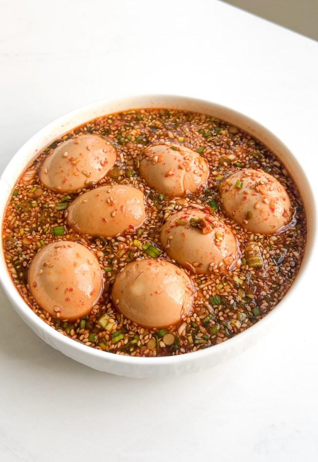

Soy Eggs
An easy overnight recipe for people who like salty goo with their breakfast rice.

Ingredients
- 3 or so large brown eggs
- A small onion
- Garlic
- Red chili flakes
- Roasted sesame seeds
- Toasted sesame oil
- 1/4c Soy sauce
- 2tbsp Mirin
Preparation
This recipe is designed to be made the night before, or at least 4hrs before you want to
consume these eggs.
- Put a small pot on the stove, and bring to a boil. Prepare a bowl of ice water to the side.
- While the water is coming to a boil, mince your onion and garlic, and place in a container that
holds about 2cups and can be sealed for the fridge.
- When the water comes to a boil, add your eggs. Boil for 6 minutes.
- While you wait for the eggs to boil, continue assembling your marinade. Combine the soy sauce, mirin,
sesame oil, red chili flakes, and sesame seeds in the container you placed the minced onion and garlic
inside.
- When 6 minutes are up, use a slotted spoon to take the eggs out of the water, and put them directly
in the ice bath you prepared earlier. Wait a few minutes for the eggs to cool, and then peel them.
- Place your peeled soft boiled eggs in the container with the rest of the ingredients. If the marinade
doesn't cover the eggs -- and it won't -- add water until the eggs are submerged.
- Let the eggs marinate overnight, or at least 4 hours. Enjoy on some nice, hot rice in the morning.